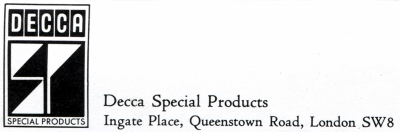
DECCA（デッカ）
1929年設立のイギリスの音響機器メーカー。かつてステレオ・レコードの録音方式の規格化で、アメリカのウエストレックスと争ったイギリスのブランド。レコードのレーベル（日本では「ロンドン」レーベルで流通したものが多い）としても有名。なお「ロンドン」は当時の国内配給会社名である。
デッカのV/L方式はウエストレックスの45/45方式に破れたが、V/L（バーチカル/ラテラル）方式再生用に開発されたカートリッジは、コイルの結線を変えることで45/45方式にも対応し、その後も独自の音色を持つ製品として生産が続いた。また独自思想のカートリッジに合わせたアームもある。なおアナログ関連製品の他には、リボン・スピーカーが輸入されていた。
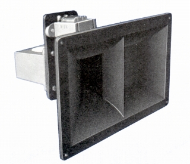
(Londom Ribbon H-F Loudspeaker 周波数帯域は1000-25000Hzで実質はツィーターである) 代理店はバルコムトレーディング。1980年代末にオーディオブランドとしては姿を消した（レコード部門はその後も存続）。
なおデッカ自体の製品は途絶えたが、同社のスタッフが設立した「プレゼンス オーディオ(PRESENCE AUDIO)」により、その独創的なカートリッジは引き継がれた。(プレゼンス オーディオについては、当ページ末尾参照）
�T.カートリッジ
針先の動きを、水平方向と垂直方向が違う発電形態（水平方向はムーミングアイアン、垂直方向はバリアブルリアクタンス）という独創的な機構が特長。国内の資料では「バリレラ」型とされることが多い(MI型に分類する資料有り）。「MK
�T」からスタートしたが、MK �T〜�Vはデッカのアーム専用型（*）だった。MK �Wから一般のアームに装着可能なタイプとなった。
*一般型アームに装着する変換アダプターがあったようだ。管理人が見かけたのはSME製とのふれ込みの製品だった。ただし管理人の所有する資料には記述はなく、かなりの入手困難の製品なのかもしれない。
�@MK �U
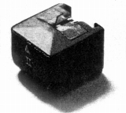
�AMK �V
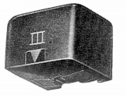
(MK�V）�BMK �W
H-4E、SH-4Eが従来どおりのデッカ・アーム専用型で、
C4E、SC4Eが一般アーム対応型。なお各2種あるのは、一般モデルと特性のそろったセレクトモデルがあるため。
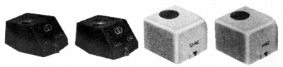
(MK �Wファミリー 左2台が汎用型 右2台が専用型)Mk4 H-4E Mk4 SH-4E Mk4 C4E Mk4 SC4E
�CMK �X
1971年にスターとした軽針圧対応を果たした一般アーム対応型。当初はMK
�X「ロンドン」1機種だったが、後半は3機種となった。この世代では、針先形状・出力などに差がある。ただし、バーティカル・トラッキングアングルは15度と古典的な設計はそのままのようだ。（＊）
＊バーティカル・トラッキングアングルについて
古い時代にはレコードのカッティング角は15度とされ、対応するカートリッジのバーティカル・トラッキングアングル（垂直トラッキング角度）も15度とする場合が多かった。しかし1970年代になり、カッテイング角は20度とすることが増えた（例 DIN=ドイツ工業品標準規格では1973年9月に変更）。その為1970年代以降に設計されたモデルではバーティカル・トラッキングアングルは20度とされるようになった。日本ではテクニカのAT-15Eなどからが該当するし、海外モデルではオルトフォンのMC20などである。
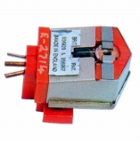
(MK �X/EE)MK �X「ロンドン」 MK �X/E MK �X/EE MK �X/M
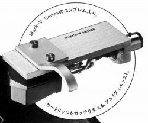
(1981年の夏に限定販売した特製シェル付きMK V)�DMK 7
デッカ自体としては、最後のカートリッジ。プレゼンス オーディオのLondon Super Gold Mark
7のオリジナルモデル。
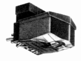
�U.アーム
専用規格のカートリッジを出していた関係上、アームも扱っていた。
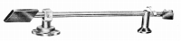
(MK-1スーパー）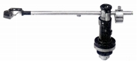
（インターナショナル・ピックアップアーム）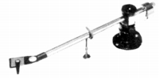
（International Arm）
�V.その他
クリーナー2点とアームリフター。
�W.（番外）プレゼンス オーディオ(PRESENCE AUDIO)
1989年に姿を消した名門DECCA(デッカ)のメンバー（エンジニアであるジョン・ライト）によって設立されたブランド。デッカ伝統のＶＬ方式のカートリッジを継承している。当時の代理店はバルコム、その後（〜2014年）完実電気、現在はヨシノトレーディング。当サイトが保有する資料では、カートリッジ2機種しかないので、番外としてここに収録する。
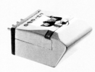
(London Jubilee)London Super Gold Mark 7 London Jubilee